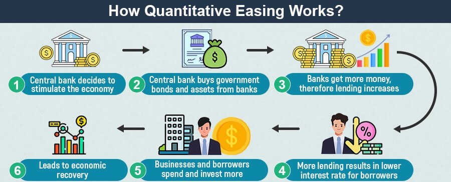

Fundamental Analysis
Fundamental analysis is a method of evaluating the intrinsic value of an asset by examining related economic, financial, and other qualitative and quantitative factors. In the context of forex trading, fundamental analysis involves analyzing the economic indicators, monetary policies, and political stability of countries to forecast the future movements of their currencies. Unlike technical analysis, which focuses on price charts and patterns, fundamental analysis seeks to understand the underlying factors that drive currency value changes.
Key Components of Fundamental Analysis
Economic Indicators:
Economic indicators are statistics that provide information about a country's economic performance. They are released regularly by government agencies and private organizations and have a significant impact on currency prices.
Gross Domestic Product (GDP):
The total value of all goods and services produced by a country in a specific period. A rising GDP indicates economic growth, which usually strengthens the country's currency.
.jpg)
Employment Data:
Includes the unemployment rate, non-farm payrolls, and other employment figures. Low unemployment rates are typically associated with a stronger currency.

Inflation Rates:
Measured by indices such as the Consumer Price Index (CPI) and Producer Price Index (PPI). Higher inflation can erode purchasing power, leading to a weaker currency.

Monetary Policy:
Central banks control monetary policy, which includes setting interest rates and other financial tools to regulate the economy.
Interest Rates:
Central banks raise or lower interest rates to control inflation and stabilize the economy. Higher interest rates attract foreign investment, boosting the currency value.

Quantitative Easing (QE):
A monetary policy where the central bank buys financial assets to inject liquidity into the economy. QE can devalue the currency due to increased money supply.
Political Stability and Economic Performance:
Political events, such as elections, policy changes, and geopolitical tensions, can significantly impact currency values. Stable governments and sound economic policies tend to strengthen a country's currency.

Economic Calendars:
Traders use economic calendars to track the release dates of important economic indicators and events. Economic calendars help traders anticipate market movements and make informed trading decisions based on upcoming data releases.

News and Reports:
Keeping up with financial news and reports from reliable sources is essential for fundamental analysis. News regarding economic policies, geopolitical events, and market sentiment can influence currency prices.

Conclusion
Fundamental analysis is a crucial tool for forex traders, providing insights into the economic, political, and financial factors that influence currency values. By understanding and analyzing economic indicators, monetary policies, and political stability, traders can make informed decisions and develop effective trading strategies. While fundamental analysis requires staying updated with a wide range of information, it offers a comprehensive understanding of the forces driving the forex market.